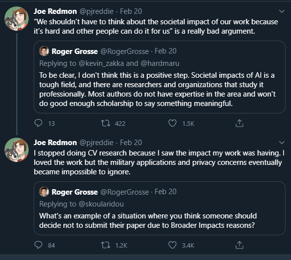

"You Only Look Once"
Hey Guys, it is I once again, you friendly neighborhood weirdo, Zariyah. Anyway today we going to talk about YOLO. Now I know what you thinking, "You Only live Once" right? Well even though I don't really believe we only live once, we actually here to talk about a different kind of "YOLO", the algorithm kind. YOLO- You Only Live Once, what is it? Well my friends this algorithm can be thought of as an eye. The eye sees, interprets and sends information to the brain which then processess it. Now imagine if a machine could interpret this information just as the brain does. How do you make the machine see and successfully interpret. The YOLO Algorithm makes this possible, and to add on to that, unlike most "object detection" algorithms, YOLO makes up in the speed factor. Allowing for real time object detection.
On the 20th February 2020, the creator of this algorithm, Joseph Redmon tweeted:

The Good, The Bad and The Ethical
As developers we tend to overlook the broader impacts that our work might have, some of us may even choose to do this deliberately. Sometimes these could be minor impacts that won't result into anything major, but what about the serious and dangerous impacts. What do we do when our work is used for malicious purpose. Do we all this? Or do we give up years of research for the benefit of the good? Once again we see the play of toxic power offered by the gift of knowledge, blinded by the illusion that our work and researchis morally good. When Joseph tweeted about this, people had a lot to say. Some told him to use this as a way to create awareness, other praised him for his choice, but more importantly it revealed just how this ethical issue obstructs almost every researcher and developer. But I say what is the purpose of stopping, it only means you giving someone else the oppotunity to come along and finish what you started.Let us take a step further, What are the main ethical concerns that come to rise? Yeah, you guessed it, Artificial Intelligence. For years the ethical concerns envolving AI has only but increased in number, especially when looking at its use in warfare. What happens when the algorithm is used to initiate a kill command? Or rather who is to say that this algorithm will have the ability to cease the kill command. I mean we have seen it before, as a result of incorrect identification leading to wrongful imprisonment.
The ethical issue do not really lie withine the algorithm itself, but rather links to other forms of ethical issues we have been faced with for years.